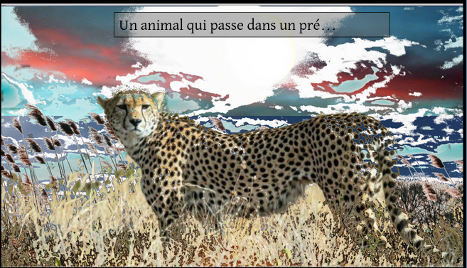

Les choses qui ne font que passer
Les choses qui ne font que Le vent qui souffle... les oiseaux qui volent... la musique à la radio... Les saisons, les mois, les années... Les minutes, les heures, les jours... Les trains... La pub à la télé... Les affiches des films... Un animal qui passe dans un pré... Les nuits... Une feuille qui tombe... Les odeurs...
Les choses qui ne font que passer... Le vent qui souffle... les oiseaux qui volent... la musique à la radio...

Les saisons, les mois, les années... Les minutes, les heures, les jours...

Les trains...

La pub à la télé... Les affiches des films...

Un animal qui passe dans un pré....
Les nuits...

Une feuille qui tombe...

Les odeurs...